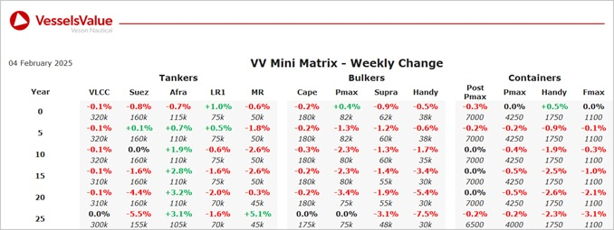

inWeekly Vessel Valuations Report05/02/2025

Bulkers: Softening observed for older tonnage Bulker values last week whilst newbuild values for larger tonnage firmed
Capesize (Newcastlemax) Berge Kita (207,900 DWT, Oct 2013, Imabari) sold to undisclosed buyers for 15 mil, VV Value USD 14.91 mil
Capesize BC Gloriuship (171,300 DWT, Jan 2004, Hyundai Samho HI) sold to Seanergy Maritime Corp for 36.72 mil, VV Value USD 38.53 mil
Kamsarmax BC Althina II (82,000 DWT, Jun 2015, Sanoyas) sold to Sealestial Navigation Co for USD 25.05 mil, VV Value USD 25.06 mil
Kamsarmax BC Kleisoura (80,800 DWT, Oct 2017, Japan Marine United) sold to Polforce Shipping SA for USD 27.65 mil, VV Value USD 28.65 mil
Supramax BC Orion (56,100 DWT, May 2007, Mitsui Tamano) sold to unknown Chinese for 10.6 mil, VV Value USD 11.2 mil
Tankers:Fluctuation observed for Tanker values last week mainly due to several recent sales across all tanker sectors
VLCC Leicester (300,900 DWT, Jan 2017, SWS) sold to undisclosed buyers for USD 87 mil, VV Value USD 89.61 mil
4 x Suezmax (150,000-159,000 DWT, 2006-2007, Samsung/Universal) sold en bloc to unknown Middle Eastern buyers for USD 128 mil, VV Value USD 129.16 mil
Aframax Kara Sea (115,200 DWT, Apr 2010, Sasebo) sold SS/DD Due to undisclosed buyers for USD 37 mil, VV Value USD 37.92 mil
Aframax Sea Falcon (110,300 DWT, Sep 2007, Mitsui Ichicara) sold to unknown Chinese buyers for USD 30.5 mil, VV Value USD 30.33 mil
Aframax Sousta (106,000 DWT, Nov 2007, Tsuneishi Zosen) sold to undisclosed buyers for USD 30 mil, VV Value USD 29.5 mil
MR2 (Chemical/Product) Nord Himalaya (49,900 DWT, Jul 2011, Onomichi Dockyard) sold to undisclosed buyers for USD 25.25 mil, VV Value USD 26.66 mil
Containers:Older vessels nudge down further in the smaller segments with stability remaining across most of the sector this week.
Handy Container Asian Ace (1,740 TEU, May 2005, Guangzhou Wenchong) sold to Chinese buyers for USD 9.5 mil SS/DD due and poor condition, VV Value USD 14 mil
